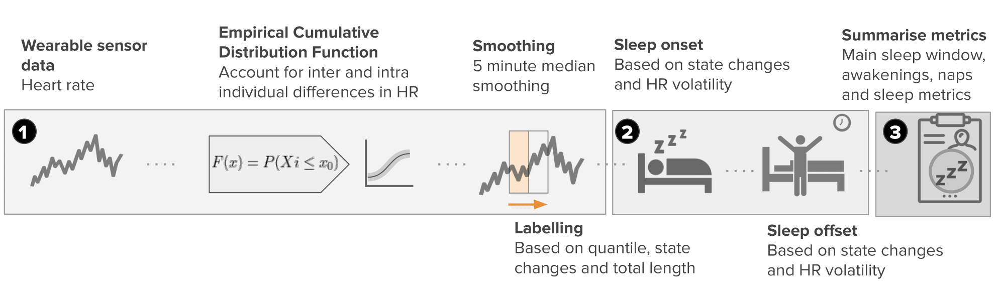
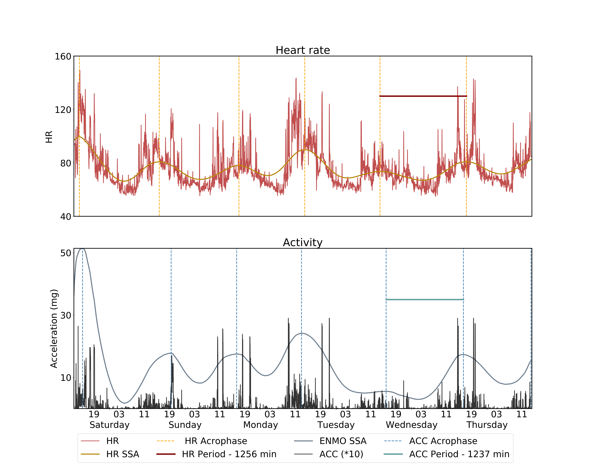
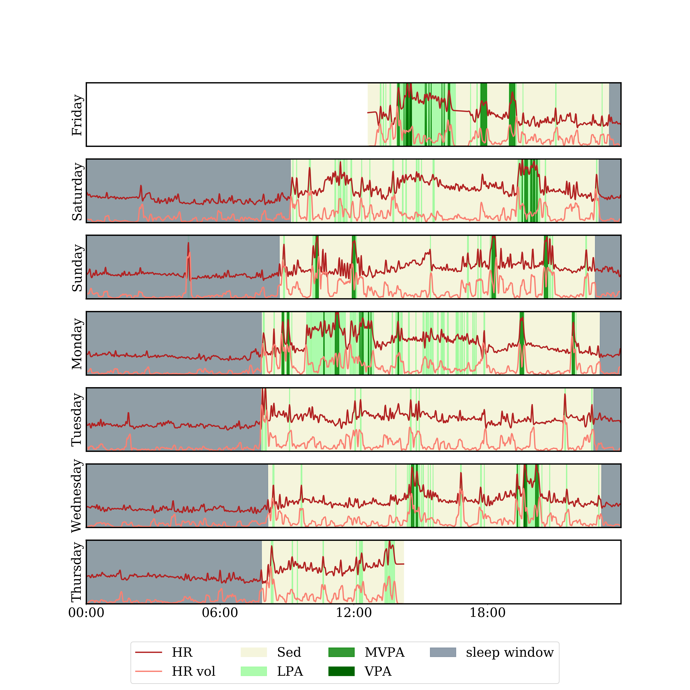

Explore HypnosPy modules:¶
Hypnospy’s core functionalities can be summarized as follows:
Labelling cohort datasets for clinical and epidemiological sleep research: HypnosPy allows the user to run most traditional heuristic sleep algorithms, triaxial accelerometry and heart rate-based approaches in a seamless and modular way. The software also supports sleep diary and expert sleep annotation options and can be used to calculate a battery of sleep quality metrics.
The HR algorithm developed by our group consists of the following steps: (1) Wearable sensor HR data is obtained and pre-processed, setting initial sleep blocks through ECDF quantile thresholds Q. (2) Blocks longer than L minutes are kept and merged with other blocks if their gap is smaller than G minutes. The limits of the resulting blocks are then used as sleep candidates for sleep onset and offset. (3) Then, rolling heart rate volatility is used for the refinement of these candidate times by finding nearby periods where HR volatility is high. In free-living conditions with full-day of recordings, we recommend Q to be set to 0.35, L to be on the range of 30-40 minutes and \(G\) to be between 120-260 minutes. After this process is completed, nap and awakenings are labeled. Naps are obtained from candidate sleep blocks that were not included in the largest sleep window. Awakenings are derived from short periods (<60 minutes) within the sleep window where the heart rate exceeds the daytime threshold. These awakenings labels allow HypnosPy to provide sleep metrics such as the number of nightly awakenings, the total wake time after sleep onset (WASO) and the sleep efficiency (SE), which are widely used in the sleep literature and carry clinical significance. This is summarized in the following figure:

Integration of sleep and physical activity in a chronobiology framework: HypnosPy enables circadian rhythm analysis, supporting a variety of traditional methods like the cosinor approach as well as more recent ones like Singular Spectrum Analysis (SSA). These tools can be used with HypnosPy’s built-in physical activity analysis toolkit to interface the influence of activities in both absolute and relative temporal frameworks. For example, in chronobiology, acrophase refers to a time when a certain biological function is at its periodic, usually daily, maximum. HypnosPy produces not only the physical activity acrophase using both cosinor and SSA, but also the delay between this acrophase and sleep onset and offset. For instance, the figure bellow showcases an example where the software is used in both activity and HR data:

Personalized health monitoring using research and commercial-grade device data: HypnosPy facilitates the integration of a diverse range of wearables ranging from research grade tools to commercial, readily-available devices. Through this encompassing support, which will continue to grow over time, HypnosPy aims to enable comparative analysis across the growing number of tools available to both researchers and consumers.
For example, here is a subject labelled with HypnosPy for physical activity and sleep:
